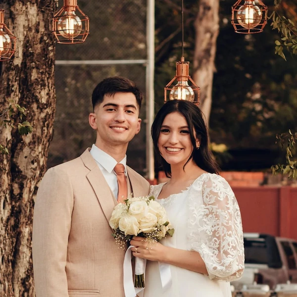
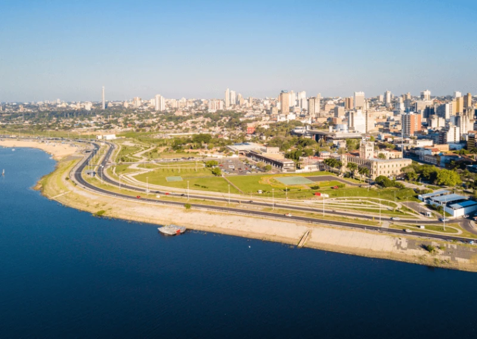

Diego Emanuel Frutos Alfonso
About Me

My name is Diego, I'm from Asuncion, the capital city of Paraguay, a country located in South America. I'm currently working as a data entry clerk and freelancing as a medical interpreter while studying web development at Brigham Young University - Idaho. I married my wife Naomy on October 2025 and we are both so happy to be together and have the blessings of the restored gospel of Jesus Christ.
Asuncion, Paraguay

Asuncion is the capital and largest city of Paraguay, located on the eastern bank of the Paraguay River. It is known for its rich history, colonial architecture, and vibrant culture. The city serves as the political, economic, and cultural center of the country, offering a mix of modern amenities and traditional charm.
My Goals
- Complete the WDD 131 course
- Get my first certificate
- Get a job related to web development
- Get my second certificate
- Get my associate's degree
- Get my third certificate
- Get my bachelor's degree